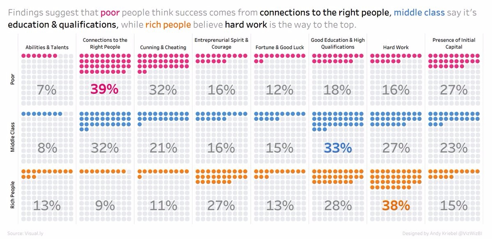

Finding suggest that poor people think success comes from
connections to the right people
, middle class say it's
education and qualifications
, while rich people believe
hard work
is the way to the top.
